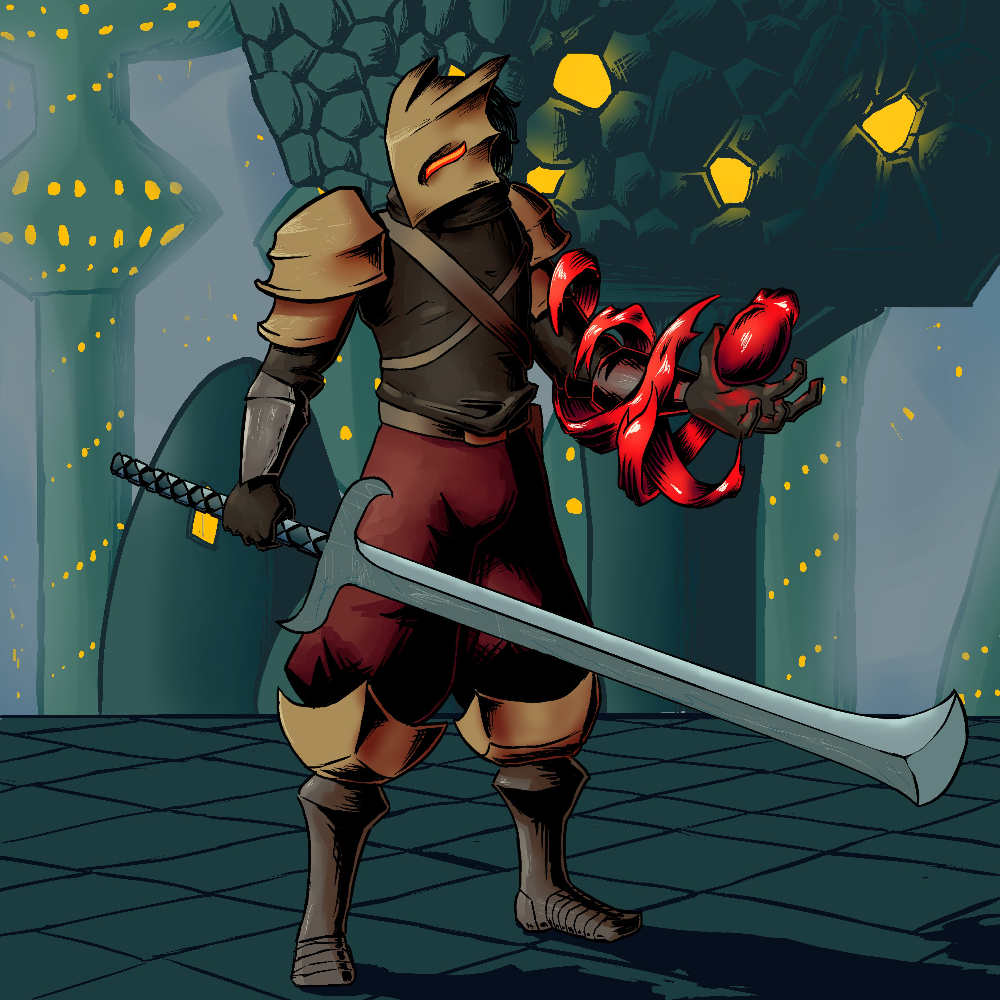
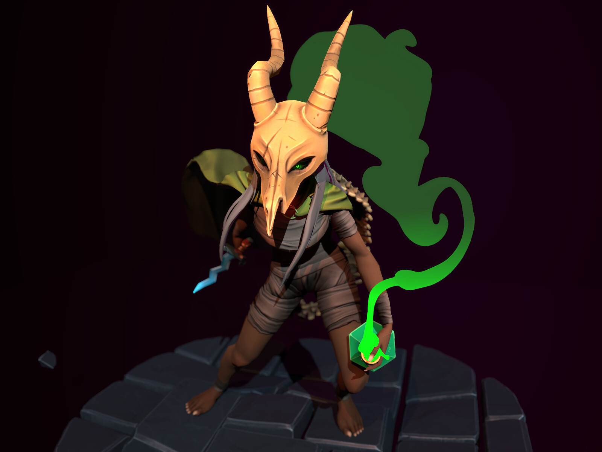

This website has some subtext that goes here under the main title.
It's smaller font and the color is lower contrast.
Some Random Information

The Ironclad, a battle-hardened warrior, relies on brute strength and powerful attacks to overcome foes in Slay the Spire.

The Silent, shrouded in mystery, employs deadly poison and swift maneuvers to outmaneuver enemies in the ever-changing tower of Slay the Spire.
The Defect, a sentient automaton, harnesses the power of lightning and orbs to navigate the dangers lurking within Slay the Spire's labyrinthine structure.
The Watcher, a serene but deadly monk, finds balance between calm meditation and fierce combat, unraveling the mysteries of Slay the Spire with every step.
In the towering halls of the Spire, where each step is a dance with fate, legends are forged amidst the clash of steel, the whisper of poison, and the crackle of lightning, as heroes rise to meet their destiny.
-Slay the Spire
Call to action!! It's time!
Sign up for our product by click that button right over there